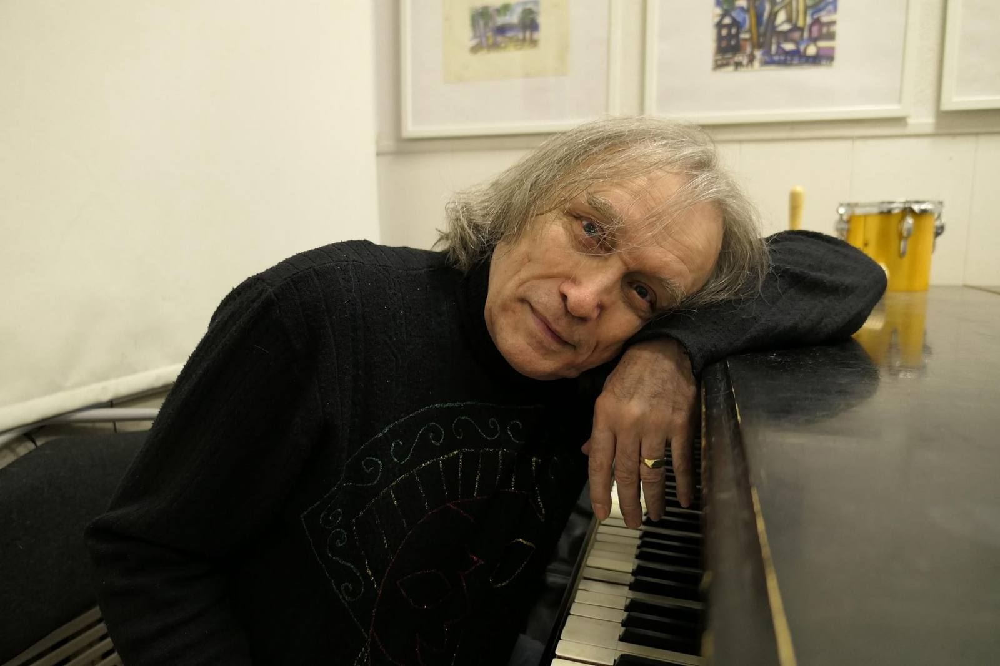
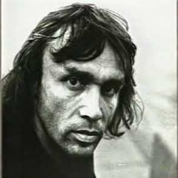
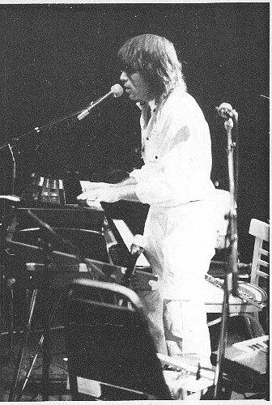
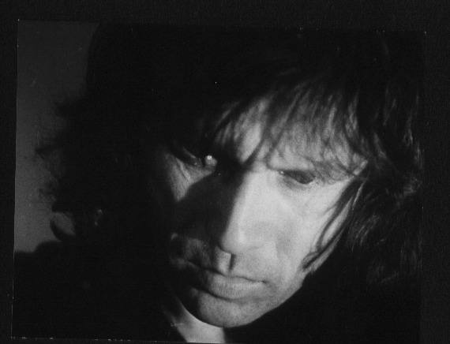
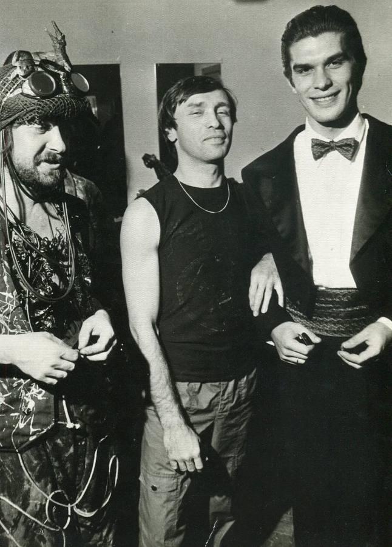
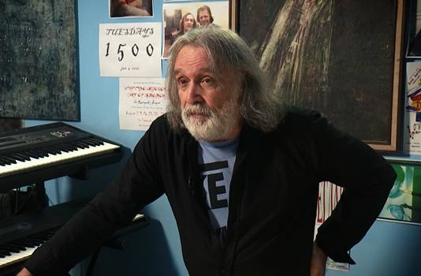

«Вторники» — каждую неделю с 1993 года. Больше 1700 вечеров музыки и поэзии.
Юрий Михайлович Касьяник — известный советский и российский композитор, пианист и мультиинструменталист. Живёт и работает в Санкт-Петербурге.
С 1993 года он еженедельно проводит «Вторники» — музыкально-поэтический арт-салон, один из самых продолжительных творческих марафонов в истории современной российской культуры. Счёт вечеров перешагнул отметку в 1700.
Родился 28 июня 1948 года в Ленинграде. Также известен под именем URIEL. Был участником группы «Поп-механика». В 1989 году выступал на XII Ленинградском международном джазовом фестивале «Осенние ритмы — 89».



«Вторники Юрия Касьяника» — музыкально-поэтический арт-салон, который проходит в Санкт-Петербурге каждую неделю уже больше тридцати лет. Это один из самых долгих творческих марафонов современной российской культуры.

1989 — джазовый фестиваль «Осенние ритмы — 89», Ленинград
«Поп-механика» — участник
с 1993 — «Вторники Юрия Касьяника», Санкт-Петербург

Музыкально-поэтический арт-салон в Санкт-Петербурге.
Проходит каждую неделю с 1993 года.
Больше 1700 вечеров.
Ближайшие даты